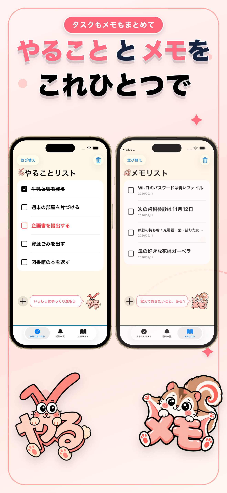
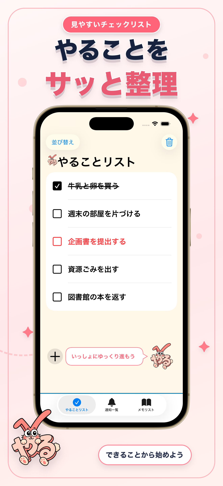
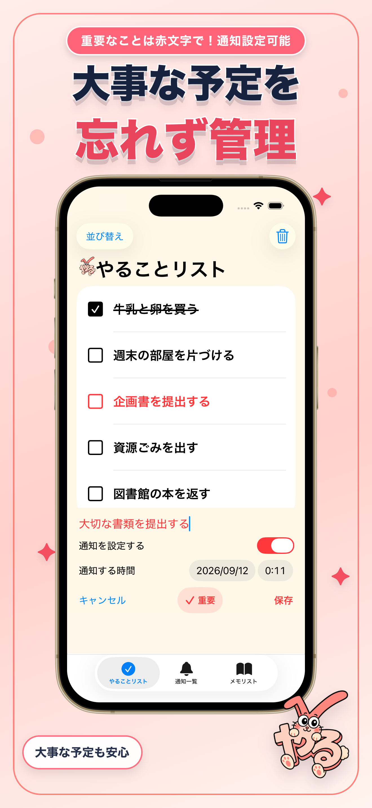
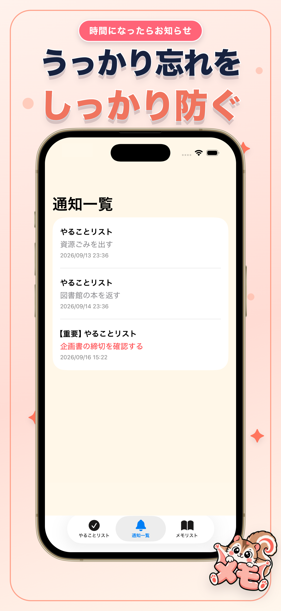
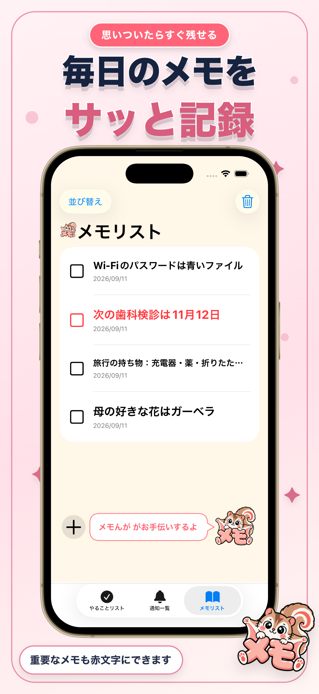

やることも、覚えておきたいことも。
タスクもメモも、ひとつに。
やるメモは、毎日のやることと大切なメモを、見やすいふたつのリストで管理できるiPhoneアプリです。
やるうさぎとメモんがも、
あなたの一歩をそっと応援します。

毎日の流れが、ひと目でわかる。
現行アプリの画面を使ったアートボードで、やるメモの使い心地をご紹介します。




シンプルだから、
続けやすい。
追加もチェックも、いつものリストの中で。やることとメモを行き来しながら、必要な情報を整えられます。
01
追加して、チェック
やることやメモをすぐに追加。終わったやることや覚えたメモはチェックできます。
02
大切なことを赤文字で
やることもメモも「重要にする」を選べます。重要な項目はリスト内で赤文字になります。
03
やることに通知を設定
追加するときに日時を選び、設定した通知は「通知一覧」で確認できます。
04
自分の順番に並べ替え
両方のリストで順番を変更でき、不要な項目や完了済みの項目を削除できます。